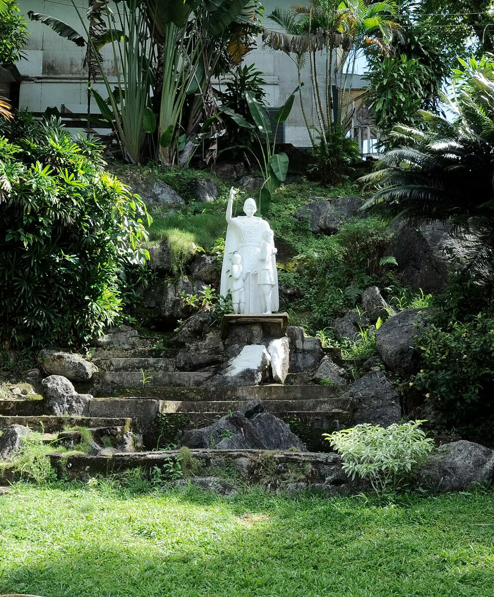
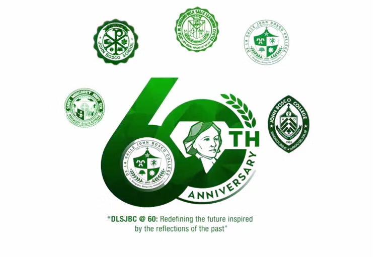
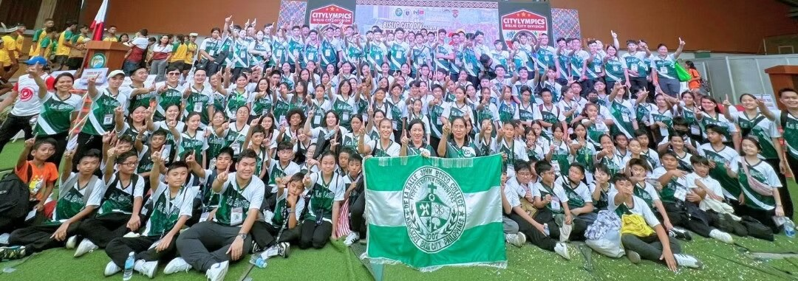

De La Salle John Bosco College
The De La Salle John Bosco College (DLSJBC) is a PAASCU-accredited Lasallian district school located in Mangagoy, Bislig, Surigao del Sur in the Philippines.
Established in 1963 by the Don Bosco Fathers, the administration and supervision of the institution was formally turned over to the De La Salle Brothers in 1977.
DLSJBC offers complete pre-school, basic education (grade school and junior high school), senior high school, college, and TESDA-accredited TVET courses.

History
From a company elementary school in the mid-'50s to the 18th district school of De La Salle Philippines — a timeline of the people and decisions that shaped DLSJBC.
Bislig Bay Elementary School
Founded for the dependents of the Bislig Bay Lumber Company Incorporated (BBLCI, forerunner of PICOP). In 1961 the company turned over management to Fr. Alberto Grol, then-parish priest of Brgy. Mangagoy, with the permission of Msgr. Charles Van den Ouewelant, converting it into a parochial school open to non-company dependents.
St. Margaret Mary School & the push for a boys' school
The parochial school became an elementary school for girls, St. Margaret Mary School, managed by the Augustinian Recollect Missionary Sisters. Fr. Grol then pursued a school for boys with the Bishop's blessing and financial support from Don Andres Soriano, on condition it be built in Brgy. Mangagoy. In 1963 the Salesian Fathers of Don Bosco agreed to manage the new school.
St. John Bosco Technical High School
Teachers from Don Bosco Mandaluyong formed the pioneering staff. Under Fr. Henry Raam, MSC, the school received the United Nations' "Tools for Freedom." In 1969, the High School girls of St. Margaret Mary School merged in, forming the co-educational John Bosco School (JBS), permanently located on La Salle Drive, Barangay Mangagoy, under director Sister Blaise Lupo.
Jose Maria Soriano – Learning Center
PICOP (then BBLI) established the JMS-LC in Brgy. Coleto for employees' children in Forest Drive Village, with Br. Thomas "Tom" Cannon, FSC as its first school director.
De La Salle Brothers take over
As the Don Bosco Fathers and Maryknoll Sisters departed, administration of John Bosco School was formally turned over to the De La Salle Brothers. In 1982, under Br. Mifrando Obach, FSC, JBS and JMS-LC merged into a two-campus school still bearing the John Bosco School name.
Consolidation and a new College Department
PICOP Resources withdrew financial assistance; JMS-LC operations transferred to the JBS Main campus and the site became the St. Br. Miguel Retreat and Training Center. In 1999, John Bosco School opened its College Department, becoming John Bosco College (JBC).
De La Salle John Bosco College
JBC was officially accepted as a District School of De La Salle Philippines. Under School President Mrs. Bro. Ophelia S. Fugoso, AFSC and LaSallian Brother consultant Bro. Narciso "Jun" Erguiza, FSC, the acceptance ceremony in February 2007 made it the 18th district school of De La Salle Philippines, renamed De La Salle John Bosco College.
Continued Lasallian leadership
The school's current president is Mrs. Aristarco "Restie" A. Ugmad, PhD, who succeeded Mr. Pablo "Jun" N. Jordan, Jr., PhD.
Sixty years of Lasallian spirit
A look at the crest that carries our history, and the community that shows up for each other on and off campus.


Curious about life at DLSJBC?
Read our latest news and announcements from campus.